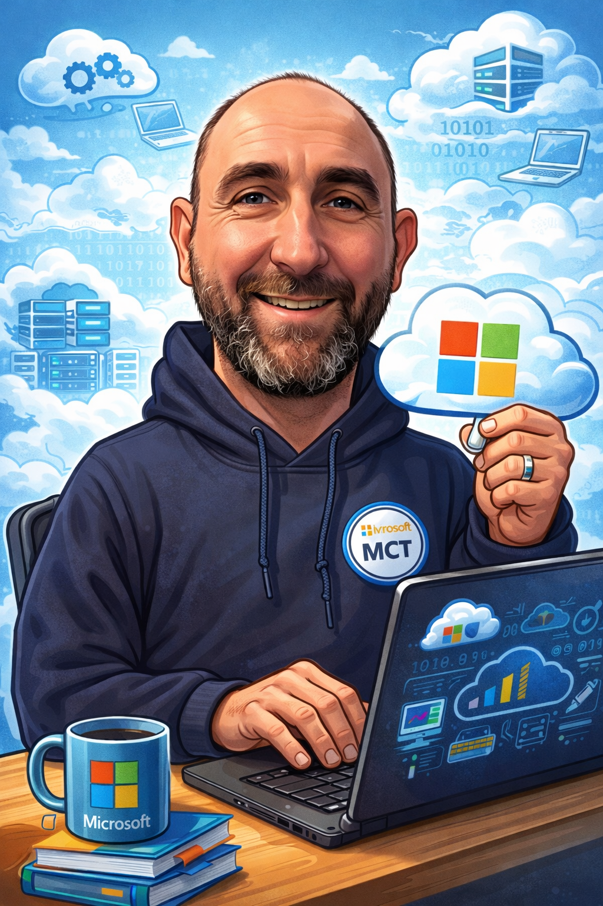

Cloud Engineer & Microsoft Certified Trainer — Antwerpen

Wie ben ik
Ik ben Davy Aerts, woonachtig te Antwerpen samen met mijn vrouw en konijntjes. Als Cloud Engineer en Microsoft Certified Trainer heb ik meer dan 10 jaar ervaring in IT-infrastructuur, cloudservices en beveiliging.
Ik heb een sterke focus op Microsoft 365, Azure en beveiligingsoplossingen en zorg ervoor dat de systemen van mijn klanten altijd goed werken, veilig zijn en met hen mee kunnen groeien.
Met meerdere Microsoft-certificaten op zak geef ik regelmatig trainingen over Microsoft-technologieën, waaronder de AB-900-certificering. Wat mijn trainingen echt waardevol maakt, is dat ik ze combineer met praktijkervaring uit de vele projecten die ik heb uitgevoerd.
Wat mij echt drijft, is het delen van kennis. Ik vind het leuk om mijn collega's te helpen — of dat nu persoonlijk is, via een kennisartikel, of gewoon door hun vragen te beantwoorden gedurende de dag.
Certificaten
Ervaring
Verplaatsen van bestanden naar OneDrive voor naadloze cloudopslag en samenwerking binnen de organisatie.
Overschakelen van traditionele VoIP-systemen naar Microsoft Teams voor geïntegreerde communicatie.
Ontwerpen en implementeren van Microsoft Intune voor beveiligd apparaatbeheer op organisatieniveau.
Of je nu je team wilt trainen, naar de cloud wilt overstappen of je beveiliging wilt verbeteren — ik sta klaar met de kennis, ervaring en passie om je te ondersteunen.